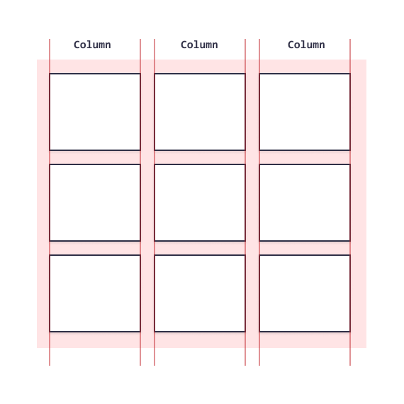
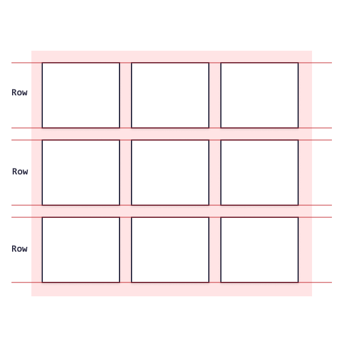
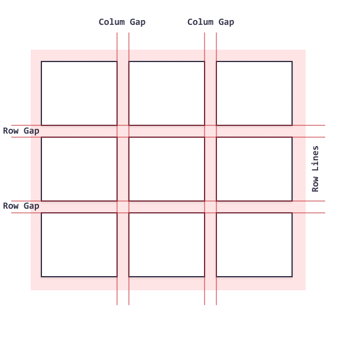

| 属性 | 描述 |
|---|---|
| box-sizing | 定义元素宽度和高度的计算方式：它们是否应包含内边距（padding）和边框。 |
| 属性 | 描述 |
|---|---|
| box-sizing | 定义元素宽度和高度的计算方式：它们是否应包含内边距（padding）和边框。 |
以下是flex布局的一些主要属性：
| 属性 | 实例 | 描述 |
|---|---|---|
flex-direction |
EG | 定义容器要在哪个方向上堆叠 flex 项目 |
flex-wrap |
EG | 规定是否对 flex 项目换行 |
flex-flow |
EG | 用于同时设置 flex-direction 和 flex-wrap 属性的简写属性。 |
justify-content |
EG | 用于对齐flex项目 |
align-items |
EG | 属性用于垂直对齐 flex 项目 |
@media规则，它让为不同媒体类型定义不同样式规则成为可能。媒体查询可用于检查许多事情，例如：
| 值 | 描述 |
|---|---|
all |
用于所有媒体类型 |
print |
用于打印机 |
screen |
用于计算机屏幕，平板电脑，智能手机等 |
speech |
应用于屏幕阅读器等发声设备 |
如果指定的媒体类型与正在显示文档的设备类型匹配，并且媒体查询中的所有表达式均为true，则查询结果为true。
true时，将应用相应的样式表或样式规则，并遵循正常的级联规则。
@media not|only mediatype and (expressions) {
CSS-Code;
}
可以通过meta标签来控制视口
<meta name="viewport" content="width=device-width, initial-scale=1.0">
它为浏览器提供了关于如何控制页面尺寸和缩放比例的指令。 width=device-width 部分将页面的宽度设置为跟随设备的屏幕宽度（视设备而定）。 当浏览器首次加载页面时，initial-scale=1.0 部分设置初始缩放级别。
网格列 (Grid Columns): 网格项的垂直线被称为列:
网格行 (Grid Rows): 网格项的水平线被称为行:
网格间隙 (Grid Gaps)：每列/行之间的间隔称为间隙:
| 属性 | 描述 |
|---|---|
grid-column-gap |
设置每列的间隙 |
grid-row-gap |
设置每行的间隙 |
grid-column-gap |
grid-row-gap和grid-column-gap属性的简写属性 |
grid-column-start |
设置网格从第几列开始 |
grid-column-end |
设置网格到第几列结束 |
grid-row-start |
设置网格从第几行开始 |
grid-row-end |
设置网格到第几行结束 |